Ізолювальні вправи не є найкращими для розвитку сили або збільшення м'язової маси, вони застосовуються для формування м'яза, опрацювання м'язів, що відстають. Наприклад, дельтовидний м'яз складається з трьох пучків, якщо один з пучків відстає у розвитку, то його можна задіяти більшою мірою ніж інші за допомогою ізолюючих вправ.
Новачки взагалі не повинні застосовувати у своїй програмі ізолюючі вправи, оскільки вони, як правило, менш ефективні, тренувальна програма професіоналів повинна включати не більше 20% ізолюючих вправ.
М'язи грудей, трицепс, передня дельта
Віджимання з вузьким поставленням рук
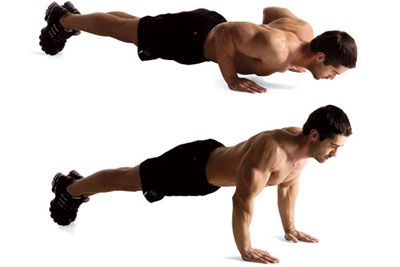Віджимання вузьким хватом – це різновид будь-якого віджимання, коли руки на підлогу ставлять максимально близько один до одного. Різна постановка рук дозволяє завантажити конкретні цільові м'язи. Віджимання від підлоги вузьким хватом, зокрема, змушують якісно задіяти саме трицепс.Приклад віджимань вузьким хватом можна переглянути за посиланням
Віджимання з вузькою постановкою рук від підлоги, лави або стіни призначені для опрацювання триголового м'яза плеча
Віджиматися вузьким хватом можна хоч десь – удома, на вулиці, у спорт залі. Вправа не вимагає спеціального обладнання та тренера для навчання техніці.
Серед недоліків відзначимо слабке навантаження на грудні м'язи, тому жінкам, які прагнуть підкачати груди, рекомендується віджиматися з широкою постановкою рук. Також, ця вправа не допоможе суттєво збільшити м'язовий об'єм. Але цей мінус властивий будь-яким видам віджимань, оскільки приріст рельєфу неможливий без силових навантажень. У цьому випадку здійснюється робота з власною вагою.
Чи можна нашкодити організму таким навантаженням? Так, якщо займатиметеся, будучи в стані, який ніяк не можна поєднати зі спортивними вправами. Також, з обережністю практикуйте віджимання, якщо у вас нещодавно були травми чи вивихи цільових зв'язок, суглобів чи сухожиль. При захворюваннях суглобів плеча, ліктя чи зап'ястя віджиматися взагалі протипоказано.
Віджимання широким хватом
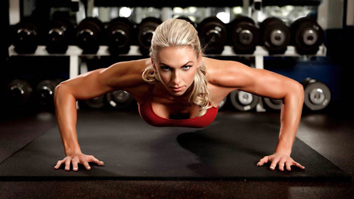Віджимання широким хватом - це базова вправа, яка входить в тренувальний комплекс всіх видів спорту. Воно дозволяє ефективно навантажити мускулатуру верхньої частини корпусу, підвищити силу та витривалість атлета, зміцнити зв'язки та суглоби плечового пояса. Яскравий приклад віджимань широким хватом можна переглянути за посиланням.
Вправа підходить всім спортсменам будь-якої статі. Жінки особливо оцінять його користь у підтяжці грудей, адже воно якісно навантажує грудні м'язи, а отже, робить форму молочних залоз більш пружною та окресленою. Чоловіки зможуть збільшити силу і рельєф мускулатури, розігріти м'язи перед силовим комплексом, підвищити рівень своєї витривалості.
Правильне виконання техніки у віджимання широким хватом впливає на результативність та якість процесу. В іншому випадку можна перекласти навантаження на зовсім іншу мускулатуру або зовсім на спину.
Виконайте розминку – зробіть махи руками, кругові обертання ліктьових, плечових та променево-зап'ясткових суглобів, розімніть спину та прес, пострибайте на місці, щоб прискорити кровообіг.
Атлети, які роблять віджимання широким хватом і ноги ставлять разом, підвищують собі складність завдання за рахунок того, що змушені сильніше контролювати рівновагу. Чим ширша постановка ніг, тим більша площа опори, відповідно, тим легше віджиматися.
Віджимання від стільця
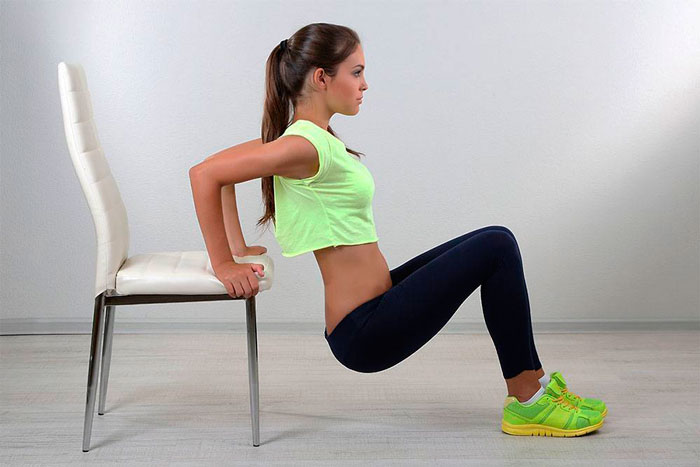Зворотні віджимання, які можуть виконуватися із застосуванням опори або просто від підлоги – це хороша вправа для опрацювання трицепсів або м’язів задньої частини рук. Дана вправа допомагає варіювати навантаження, і підходить вона як чоловікам, так і жінкам. Зворотні віджимання на трицепс називаються зворотними, оскільки виконуються вони в упорі ззаду – руки розташовуються не перед корпусом, а за ним. Приклад виконання вправи можна преглянути тут.
Віджимання від лави, іншої опори від підлоги добре опрацьовують триглаві м’язи плеча, задіюючи та інші м’язові групи. Фахівці рекомендують включати в програму поряд з іншими видами віджимань.
Краще всього ставити віджимання від лави в упорі ззаду на початок вашого тренування. Вправа досить витратна в плані енергії. Рекомендується виконувати 3-4 підходи по 10-15 разів. Якщо для вас спочатку це важко, виконуйте стільки повторень, скільки у вас виходить, головне – дотримуйтесь техніки. Немає сенсу виконувати рухи за рахунок ривків або в половину амплітуди. Тільки правильна техніка дозволить досягти бажаних результатів.
Врахуйте, що даний вид віджимань дає велике навантаження на суглоби, тому його не рекомендується виконувати, якщо у вас є проблеми з плечима. Протипоказано дана вправа в тому випадку, якщо ви недавно перенесли травму. Пам’ятайте, що сила зсуву в плечових суглобах збільшується при провалі вниз. Щоб запобігти можливій травмі, слідкуйте за кутом згину руки. Він не повинен бути більше 90 градусів.
Віджимання в нахилі – ноги вище голови
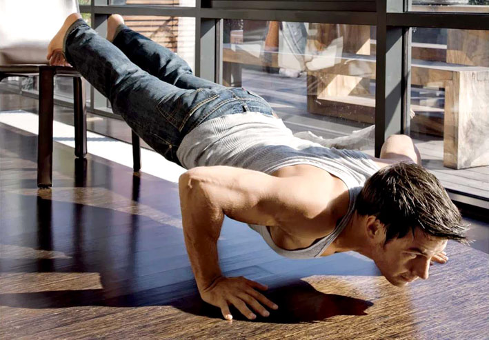Похилі віджимання можна використовувати для цільової опрацювання окремих ділянок грудей або для внесення різноманітності в звичайну тренувальну програму. В залежності від стану вашого корпусу відносно горизонту, ви можете збільшити або зменшити навантаження в порівнянні з класичними віджиманнями, а також усунути її акцент на нижню або верхню частину грудних м’язів. Приклад виконання вправи можна переглянути тут.
Коли ноги вище голови, вага тіла в основному припадає на руки, а руки, як відомо, менше і слабкіше ніг. Тому даний вид віджимань є ускладненою варіацією класичного вправи. Включати такі віджимання в свою тренувальну програму слід в тому випадку, якщо базовими віджиманнями ви вже оволоділи досконало.
Похилі віджимання можна використовувати для цільової опрацювання окремих ділянок грудей або для внесення різноманітності в звичайну тренувальну програму. В залежності від стану вашого корпусу відносно горизонту, ви можете збільшити або зменшити навантаження в порівнянні з класичними віджиманнями, а також усунути її акцент на нижню або верхню частину грудних м’язів.
Фактично віджимання з піднятими ногами — це перевернутий варіант жиму на лаві з позитивним нахилом. При цьому акцентовано опрацьовується верхня частина грудей.
Чим ширше ставимо руки, тим активніше працює груди, особливо зовнішня частина, що вже тим більше навантаження на трицепси. При вузькій постановці рук навантаження, яка все ж дістається грудним, зміщується на їх внутрішню частину.
Також чим вище ви ставите ноги, тим більше задіюються дельтоиды. Якщо ми продовжимо піднімати ноги і дійдемо до віджимань в стійці на руках, фактично це буде вправа на плечі.
М'язи спини біцепс та задня дельта
Човник
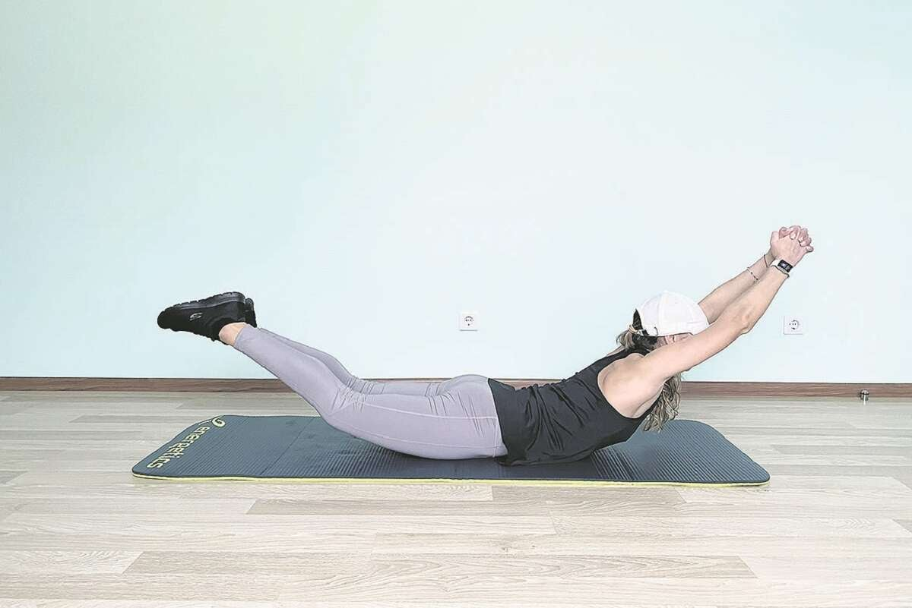Ляжте на живіт, прямі ноги зведені разом, руки витягнуті перед собою, долоні з'єднані у замок. На вдиху за допомогою напруження м'язів спини та сідниць максимально високо (але плавно та акуратно) відірвіть від підлоги натягнуті ноги та напружені руки так, щоб тіло утворило дугу. Затримайтеся у верхній точці на 1–2 секунди, а потім повільно поверніться у вихідне положення.
Слідкуйте, щоб навантаження на м'язи спини було рівномірним, а не тільки на поперек. Повторіть усе 7–10 разів.
Як правильно робити цю вправу можна переглянути за посиланням.
Гіперекстензія лежачи
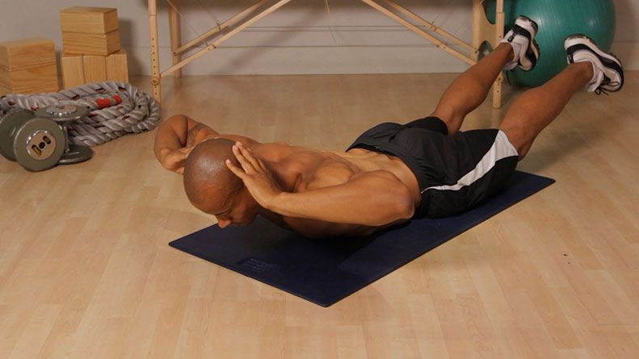Гіперекстензія – вправа, спрямована на прокачування м'язів спини. Воно рекомендується при болях у попереку або як розминка перед становою тягою та іншими вправами з навантаженням на спину. Правильний приклад виконання данної вправи можна побачити тут.
З англійської слово "гіперекстензія" перекладається як "перерозгинання" або "перерозтягування". У класичному варіанті вправа виглядає так: людина лягає вниз животом і фіксує ноги, що дозволяє хребту розслабитися. Потім піднімає верхню частину тулуба за допомогою поперекових м'язів так, щоб воно утворило пряму лінію з ногами.
Навантаження зміцнює сухожильний скелет, м'язи спини, знижує ризик травм хребта при складніших вправах.
Гіперекстензія відноситься до ізолюючих вправ. Тим, які спрямовані на опрацювання однієї конкретної групи м'язів або м'язи (найчастіше відстає у прокачуванні). У нашому випадку, це спина.
Ви коли-небудь помічали біль у попереку після тривалої прогулянки чи сидіння за столом? Значить, ця вправа створена спеціально для вас.
Супермен
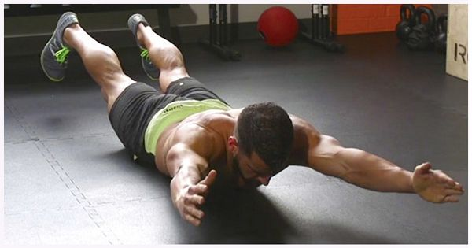Супермен – вправа для бодібілдингу для м'язів спини та попереку, а також для обволікання або зміцнення черевного преса та сідниць. Вправа Супермен легко виконувати вдома чи в тренажерному залі. Давайте розглянемо переваги цієї вправи
Для виконання цієї вправи вам знадобиться всього кілька матеріалів: зручний килимок, ваше улюблене тренувальне екіпірування і все готове. Це робить його доступним для всіх. Отже, немає виправдання для початку занять.
Якщо у вас є хороша мускулатура, ви можете досягти супермена, додавши ваги на відстані витягнутої руки. Мішок з піском або обважнений диск. Руки зігнуті близько до голови або, що важче, руки витягнуті. Не перевищуйте 5 кг. Для початку ідеально підійде пляшка на 1 кг.
Існує також динамічний варіант, в якому трохи складніше просунутися далі, коли ви опановуєте супермена: з тієї ж пози ви додаєте складність, роблячи швидкі удари руками та ногами у протилежних напрямках: відведіть праву руку, ліву ногу, потім ліву руку, праву ногу, не підпираючи бюст.
В ідеалі, щоб зробити цю вправу якомога повнішою, можна робити цю вправу в сеансі зміцнення всього тіла раз на два тижні.
Як виконувати правильно вправу "Superman" Ви можете переглянути за посиланням.
Віджимання для біцепсу
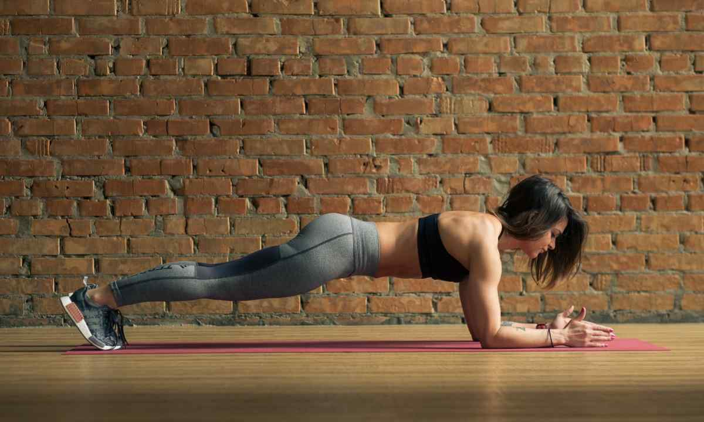Ефективно прокачати м’язи рук можна, змінивши положення долонь, за загальною рекомендації вони повинні бути розведені максимально широко. На перших етапах це стан може здатися досить болючим, виключити його можна правильним станом ліктів. Важливо не розводити їх у сторони при виконанні рухів. Збільшення навантаження на біцепси можна досягти як можна більше амплітудою при русі вниз. Ще один спосіб навантажити двоголовий м’яз – використовувати додатковий вага, наприклад, гантелі. Інвентар утримується зворотним хватом, він повинен бути стійким, що виключить травмування.
Виконання планки – відмінний варіант тренування перед віджиманнями. Поза повинна бути такою ж, як при виконанні основних рухів, але перебувати в такому положенні потрібно не менше хвилини.
Методик віджимань від підлоги чимало, саме просте розташування – від рівної поверхні. Професіонали вважають цей варіант є недостатньо ефективним, але якщо поєднувати вправу з правильним харчуванням, можна домогтися успіху.
У раціоні спортсмена повинна переважати білок. Саме ця їжа допоможе накачати м’язову масу. Кількість споживаної води має важливе значення, правильне вживання рідини позитивно впливає на якість м’язових волокон.
Як виконувати правильно вправу "Віджимання для біцепсу" Ви можете переглянути за посиланням.
Ізолюючі вправи для ніг
Класичні присідання
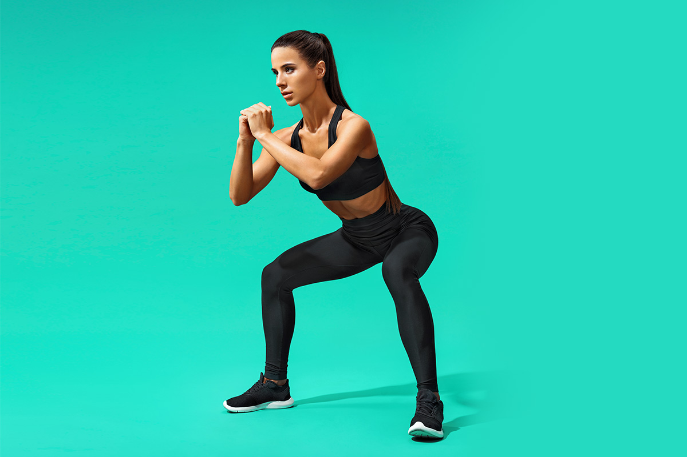Поставте ноги на ширину плечей, руки складіть у грудях. Зігніть ноги в колінах, відводячи таз назад, щоб виконати класичне присідання. Сідайте до паралелі стегон з підлогою. Коліна не виводьте за шкарпетки, спину не згинайте, дивіться прямо перед собою.
. Присідання вважаються одним з кращих вправ на стегна і сідниці, яке опрацьовує весь спектр сідничних м’язів і до того ж задіє прес і кор.
Виконуйте 12-15 повторень
Яскравий приклад виконання класичних присідань можна переглянути тут.
Випади на місці
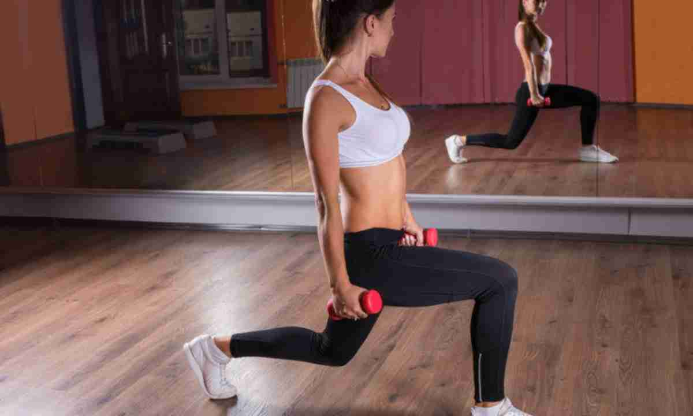Випади на місці (або присідання-ножиці) — один з найпопулярніших варіантів випадів. Це базова вправа присутній в тренувальних програмах жінок і чоловіків, незалежно від переслідуваних цілей. З його допомогою можна підтягнути стегна, сформувати об’ємні квадріцепси, зробити пружними сідниці.
Випади на місці частіше включають в свої тренування дівчата, оскільки воно є оптимальним для формування струнких ніг і підтягнутих сідниць. Але і чоловікам цю вправу буде дуже корисно для збільшення м’язової маси, адже саме присідання-ножиці відмінно прокачують квадріцепси.
Яскравий приклад виконання випадів на місці можна переглянути тут.
Підйом на носки
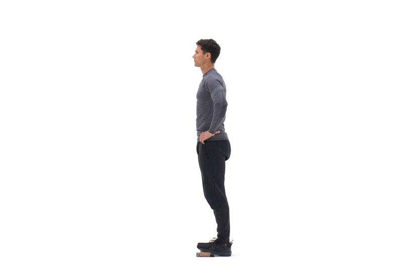Підйом на шкарпетки стоячи – найефективніша вправа у розвиток литкових м'язів. Його основна перевага полягає в тому, що ми можемо максимально розтягнути ікри в нижній точці амплітуди і скоротити статично у верхній точці.
Це набагато складніше, ніж здається здавалося б. Багато новачків роблять цю вправу неправильно: підбирають величезну робочу вагу і працюють у мінімальній амплітуді, не фокусуючись на ізольованому опрацюванні литок.
Достатньо виконувати підйом на носки стоячи раз на тиждень, наприклад, наприкінці тренування ніг. Це буде цілком достатньо для їхньої гіпертроф
Яскравий приклад виконання підйомів на носки можна переглянути тут.
М'язи живота(пресс)
Ходьба в повітрі
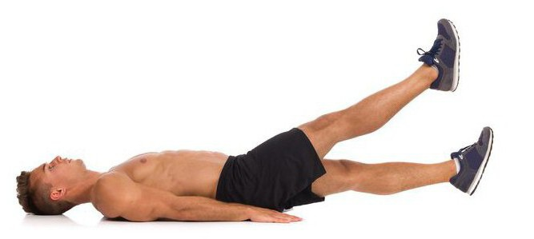Лежачи на підлозі, ноги разом, руки вздовж тіла. Не відриваючи голови і ніг, напружте м’язи преса, потім повільно підніміть одну ногу нагору, після чого опустіть її вниз. Перемените ноги. У нижній точці тримайте обидві ноги на вазі. Повторіть 25 разів.
Приклад виконання вправи можна пререглянути тут.
Велосипед
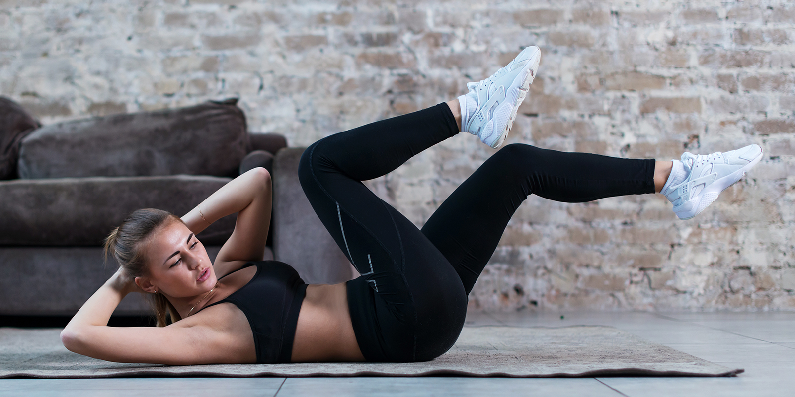Сидячи на підлозі і спираючись долонями, по черзі підтягуйте ноги до грудей, немов ви їдете на велосипеді. Виконуйте вправу 25 секунд, крутячи ногами «вперед», потім 25 секунд — «назад». Необхідно відчувати, як м’язи преса беруть участь в русі
Приклад виконання вправи можна пререглянути тут.
Підйом прямих ніг вгору.
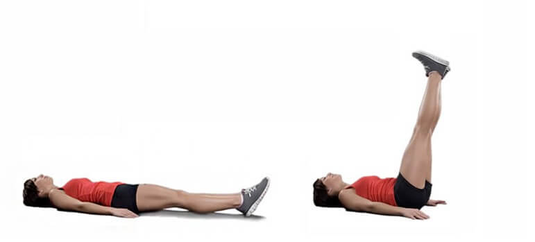Лежачи на підлозі, руки вздовж тулуба, долоні торкаються підлоги. Прямі ноги підняті вгору і зігнуті під кутом дев’яносто градусів до тіла. Не відштовхуючись від підлоги руками, підніміть таз якомога вище. Відчувайте, як працює нижній прес. Повторіть 25 разів.
Приклад виконання вправи можна пререглянути тут.